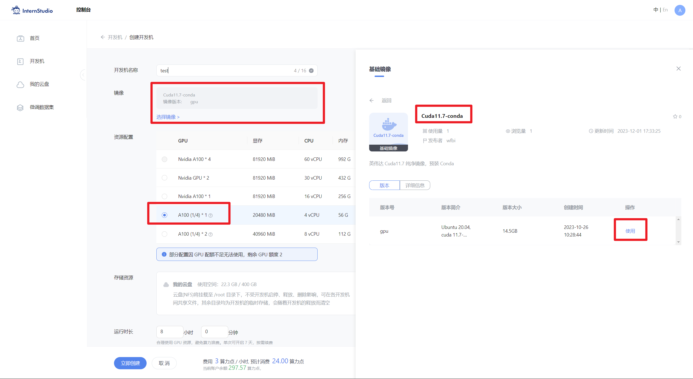
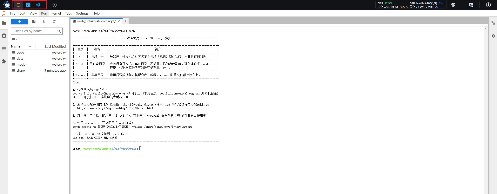
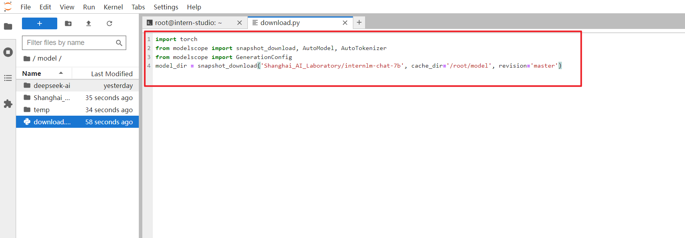
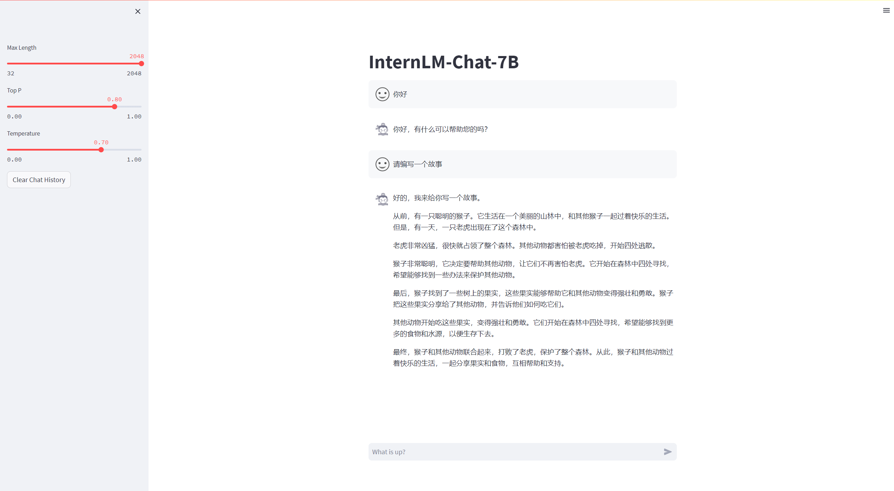
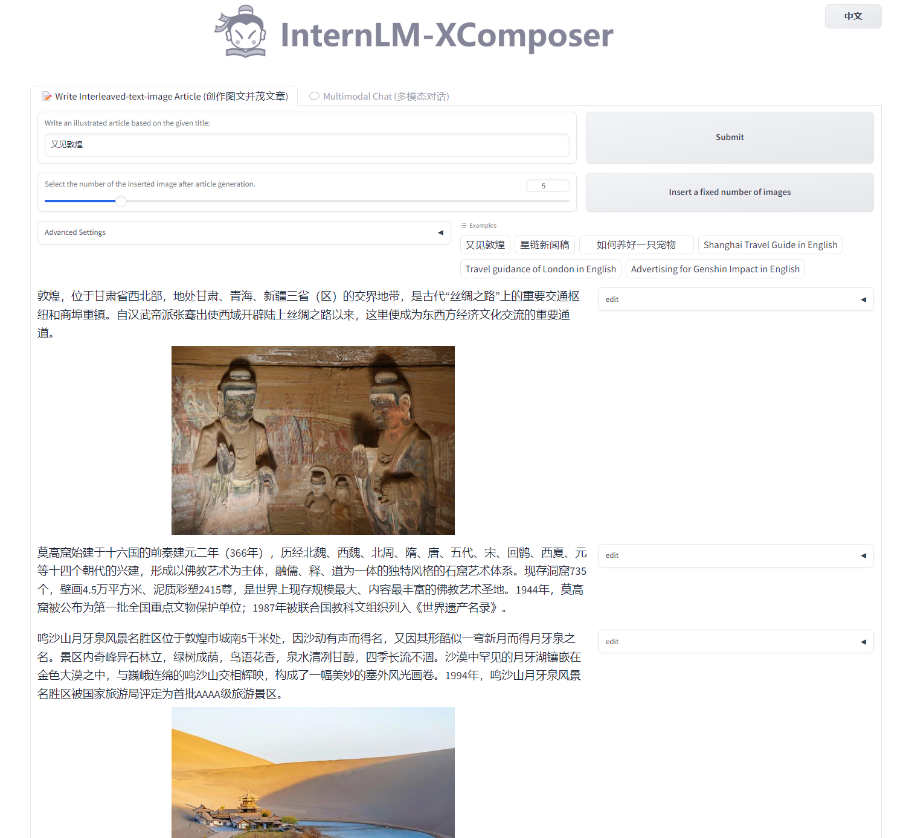
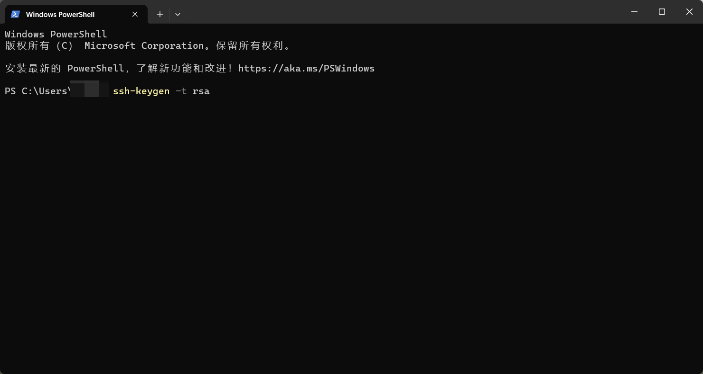

轻松玩转书生·浦语大模型趣味 Demo
1 大模型及 InternLM 模型简介
1.1 什么是大模型？
大模型通常指的是机器学习或人工智能领域中参数数量巨大、拥有庞大计算能力和参数规模的模型。这些模型利用大量数据进行训练，并且拥有数十亿甚至数千亿个参数。大模型的出现和发展得益于增长的数据量、计算能力的提升以及算法优化等因素。这些模型在各种任务中展现出惊人的性能，比如自然语言处理、计算机视觉、语音识别等。这种模型通常采用深度神经网络结构，如 Transformer、BERT、GPT（ Generative Pre-trained Transformer ）等。
大模型的优势在于其能够捕捉和理解数据中更为复杂、抽象的特征和关系。通过大规模参数的学习，它们可以提高在各种任务上的泛化能力，并在未经过大量特定领域数据训练的情况下实现较好的表现。然而，大模型也面临着一些挑战，比如巨大的计算资源需求、高昂的训练成本、对大规模数据的依赖以及模型的可解释性等问题。因此，大模型的应用和发展也需要在性能、成本和道德等多个方面进行权衡和考量。
1.2 InternLM 模型全链条开源
InternLM 是一个开源的轻量级训练框架，旨在支持大模型训练而无需大量的依赖。通过单一的代码库，它支持在拥有数千个 GPU 的大型集群上进行预训练，并在单个 GPU 上进行微调，同时实现了卓越的性能优化。在 1024 个 GPU 上训练时，InternLM 可以实现近 90% 的加速效率。
基于 InternLM 训练框架，上海人工智能实验室已经发布了两个开源的预训练模型：InternLM-7B 和 InternLM-20B。
Lagent 是一个轻量级、开源的基于大语言模型的智能体（agent）框架，支持用户快速地将一个大语言模型转变为多种类型的智能体，并提供了一些典型工具为大语言模型赋能。通过 Lagent 框架可以更好的发挥 InternLM 的全部性能。

浦语·灵笔是基于书生·浦语大语言模型研发的视觉-语言大模型，提供出色的图文理解和创作能力，结合了视觉和语言的先进技术，能够实现图像到文本、文本到图像的双向转换。使用浦语·灵笔大模型可以轻松的创作一篇图文推文，也能够轻松识别一张图片中的物体，并生成对应的文本描述。
上述提到的所有模型，都会带领大家一起体验哦！欢迎大家来给 InternLM: https://github.com/InternLM/InternLM/ 点点 star 哦！
2 InternLM-Chat-7B 智能对话 Demo
本小节我们将使用 InternStudio 中的 A100(1/4) 机器和 InternLM-Chat-7B 模型部署一个智能对话 Demo。
2.1 环境准备
在 InternStudio 平台中选择 A100(1/4) 的配置，如下图所示镜像选择 Cuda11.7-conda，如下图所示：

接下来打开刚刚租用服务器的进入开发机，并且打开其中的终端开始环境配置、模型下载和运行 demo。
进入开发机后，在页面的左上角可以切换 JupyterLab、终端和 VScode，并在终端输入 bash 命令，进入 conda 环境。如下图所示：

进入 conda 环境之后，使用以下命令从本地克隆一个已有的 pytorch 2.0.1 的环境
bash # 请每次使用 jupyter lab 打开终端时务必先执行 bash 命令进入 bash 中/root/share/install_conda_env_internlm_base.sh internlm-demo然后使用以下命令激活环境
conda activate internlm-demo并在环境中安装运行 demo 所需要的依赖。
# 升级pippython -m pip install --upgrade pip
pip install modelscope==1.9.5pip install transformers==4.35.2pip install streamlit==1.24.0pip install sentencepiece==0.1.99pip install accelerate==0.24.12.2 模型下载
InternStudio 平台的 share 目录下已经为我们准备了全系列的 InternLM 模型，所以我们可以直接复制即可。使用如下命令复制：
mkdir -p /root/model/Shanghai_AI_Laboratorycp -r /root/share/temp/model_repos/internlm-chat-7b /root/model/Shanghai_AI_Laboratory-r 选项表示递归地复制目录及其内容
也可以使用 modelscope 中的 snapshot_download 函数下载模型，第一个参数为模型名称，参数 cache_dir 为模型的下载路径。
在 /root 路径下新建目录 model，在目录下新建 download.py 文件并在其中输入以下内容，粘贴代码后记得保存文件，如下图所示。并运行 python /root/model/download.py 执行下载，模型大小为 14 GB，下载模型大概需要 10~20 分钟
import torchfrom modelscope import snapshot_download, AutoModel, AutoTokenizerimport osmodel_dir = snapshot_download('Shanghai_AI_Laboratory/internlm-chat-7b', cache_dir='/root/model', revision='v1.0.3')注意：使用
pwd命令可以查看当前的路径，JupyterLab左侧目录栏显示为/root/下的路径。

2.3 代码准备
首先 clone 代码，在 /root 路径下新建 code 目录，然后切换路径, clone 代码.
cd /root/codegit clone https://gitee.com/internlm/InternLM.git切换 commit 版本，与教程 commit 版本保持一致，可以让大家更好的复现。
cd InternLMgit checkout 3028f07cb79e5b1d7342f4ad8d11efad3fd13d17将 /root/code/InternLM/web_demo.py 中 29 行和 33 行的模型更换为本地的 /root/model/Shanghai_AI_Laboratory/internlm-chat-7b。
2.4 终端运行
我们可以在 /root/code/InternLM 目录下新建一个 cli_demo.py 文件，将以下代码填入其中：
import torchfrom transformers import AutoTokenizer, AutoModelForCausalLM
model_name_or_path = "/root/model/Shanghai_AI_Laboratory/internlm-chat-7b"
tokenizer = AutoTokenizer.from_pretrained(model_name_or_path, trust_remote_code=True)model = AutoModelForCausalLM.from_pretrained(model_name_or_path, trust_remote_code=True, torch_dtype=torch.bfloat16, device_map='auto')model = model.eval()
system_prompt = """You are an AI assistant whose name is InternLM (书生·浦语).- InternLM (书生·浦语) is a conversational language model that is developed by Shanghai AI Laboratory (上海人工智能实验室). It is designed to be helpful, honest, and harmless.- InternLM (书生·浦语) can understand and communicate fluently in the language chosen by the user such as English and 中文."""
messages = [(system_prompt, '')]
print("=============Welcome to InternLM chatbot, type 'exit' to exit.=============")
while True: input_text = input("User >>> ") input_text = input_text.replace(' ', '') if input_text == "exit": break response, history = model.chat(tokenizer, input_text, history=messages) messages.append((input_text, response)) print(f"robot >>> {response}")然后在终端运行以下命令，即可体验 InternLM-Chat-7B 模型的对话能力。对话效果如下所示：
xxxxxxxxxxpython /root/code/InternLM/cli_demo.py2.5 web demo 运行
我们切换到 VScode 中，运行 /root/code/InternLM 目录下的 web_demo.py 文件，输入以下命令后，查看本教程5.2配置本地端口后，将端口映射到本地。在本地浏览器输入 http://127.0.0.1:6006 即可。
xxxxxxxxxxbashconda activate internlm-demo # 首次进入 vscode 会默认是 base 环境，所以首先切换环境cd /root/code/InternLMstreamlit run web_demo.py --server.address 127.0.0.1 --server.port 6006注意：要在浏览器打开 http://127.0.0.1:6006 页面后，模型才会加载，如下图所示：
在加载完模型之后，就可以与 InternLM-Chat-7B 进行对话了，如下图所示：

3 Lagent 智能体工具调用 Demo
本小节我们将使用 InternStudio 中的 A100(1/4) 机器、InternLM-Chat-7B 模型和 Lagent 框架部署一个智能工具调用 Demo。
Lagent 是一个轻量级、开源的基于大语言模型的智能体（agent）框架，支持用户快速地将一个大语言模型转变为多种类型的智能体，并提供了一些典型工具为大语言模型赋能。通过 Lagent 框架可以更好的发挥 InternLM 的全部性能。
下面我们就开始动手实现！
3.1 环境准备
选择和第一个 InternLM 一样的镜像环境，运行以下命令安装依赖，如果上一个 InternLM-Chat-7B 已经配置好环境不需要重复安装.
xxxxxxxxxx# 升级pippython -m pip install --upgrade pip
pip install modelscope==1.9.5pip install transformers==4.35.2pip install streamlit==1.24.0pip install sentencepiece==0.1.99pip install accelerate==0.24.13.2 模型下载
InternStudio 平台的 share 目录下已经为我们准备了全系列的 InternLM 模型，所以我们可以直接复制即可。使用如下命令复制：
xxxxxxxxxxmkdir -p /root/model/Shanghai_AI_Laboratorycp -r /root/share/temp/model_repos/internlm-chat-7b /root/model/Shanghai_AI_Laboratory-r 选项表示递归地复制目录及其内容
也可以在 /root/model 路径下新建 download.py 文件并在其中输入以下内容，并运行 python /root/model/download.py 执行下载，模型大小为 14 GB，下载模型大概需要 10~20 分钟
xxxxxxxxxximport torchfrom modelscope import snapshot_download, AutoModel, AutoTokenizerimport osmodel_dir = snapshot_download('Shanghai_AI_Laboratory/internlm-chat-7b', cache_dir='/root/model', revision='v1.0.3')3.3 Lagent 安装
首先切换路径到 /root/code 克隆 lagent 仓库，并通过 pip install -e . 源码安装 Lagent
xxxxxxxxxxcd /root/codegit clone https://gitee.com/internlm/lagent.gitcd /root/code/lagentgit checkout 511b03889010c4811b1701abb153e02b8e94fb5e # 尽量保证和教程commit版本一致pip install -e . # 源码安装3.4 修改代码
由于代码修改的地方比较多，大家直接将 /root/code/lagent/examples/react_web_demo.py 内容替换为以下代码
xxxxxxxxxximport copyimport os
import streamlit as stfrom streamlit.logger import get_logger
from lagent.actions import ActionExecutor, GoogleSearch, PythonInterpreterfrom lagent.agents.react import ReActfrom lagent.llms import GPTAPIfrom lagent.llms.huggingface import HFTransformerCasualLM
class SessionState:
def init_state(self): """Initialize session state variables.""" st.session_state['assistant'] = [] st.session_state['user'] = []
#action_list = [PythonInterpreter(), GoogleSearch()] action_list = [PythonInterpreter()] st.session_state['plugin_map'] = { action.name: action for action in action_list } st.session_state['model_map'] = {} st.session_state['model_selected'] = None st.session_state['plugin_actions'] = set()
def clear_state(self): """Clear the existing session state.""" st.session_state['assistant'] = [] st.session_state['user'] = [] st.session_state['model_selected'] = None if 'chatbot' in st.session_state: st.session_state['chatbot']._session_history = []
class StreamlitUI:
def __init__(self, session_state: SessionState): self.init_streamlit() self.session_state = session_state
def init_streamlit(self): """Initialize Streamlit's UI settings.""" st.set_page_config( layout='wide', page_title='lagent-web', page_icon='./docs/imgs/lagent_icon.png') # st.header(':robot_face: :blue[Lagent] Web Demo ', divider='rainbow') st.sidebar.title('模型控制')
def setup_sidebar(self): """Setup the sidebar for model and plugin selection.""" model_name = st.sidebar.selectbox( '模型选择：', options=['gpt-3.5-turbo','internlm']) if model_name != st.session_state['model_selected']: model = self.init_model(model_name) self.session_state.clear_state() st.session_state['model_selected'] = model_name if 'chatbot' in st.session_state: del st.session_state['chatbot'] else: model = st.session_state['model_map'][model_name]
plugin_name = st.sidebar.multiselect( '插件选择', options=list(st.session_state['plugin_map'].keys()), default=[list(st.session_state['plugin_map'].keys())[0]], )
plugin_action = [ st.session_state['plugin_map'][name] for name in plugin_name ] if 'chatbot' in st.session_state: st.session_state['chatbot']._action_executor = ActionExecutor( actions=plugin_action) if st.sidebar.button('清空对话', key='clear'): self.session_state.clear_state() uploaded_file = st.sidebar.file_uploader( '上传文件', type=['png', 'jpg', 'jpeg', 'mp4', 'mp3', 'wav']) return model_name, model, plugin_action, uploaded_file
def init_model(self, option): """Initialize the model based on the selected option.""" if option not in st.session_state['model_map']: if option.startswith('gpt'): st.session_state['model_map'][option] = GPTAPI( model_type=option) else: st.session_state['model_map'][option] = HFTransformerCasualLM( '/root/model/Shanghai_AI_Laboratory/internlm-chat-7b') return st.session_state['model_map'][option]
def initialize_chatbot(self, model, plugin_action): """Initialize the chatbot with the given model and plugin actions.""" return ReAct( llm=model, action_executor=ActionExecutor(actions=plugin_action))
def render_user(self, prompt: str): with st.chat_message('user'): st.markdown(prompt)
def render_assistant(self, agent_return): with st.chat_message('assistant'): for action in agent_return.actions: if (action): self.render_action(action) st.markdown(agent_return.response)
def render_action(self, action): with st.expander(action.type, expanded=True): st.markdown( "<p style='text-align: left;display:flex;'> <span style='font-size:14px;font-weight:600;width:70px;text-align-last: justify;'>插 件</span><span style='width:14px;text-align:left;display:block;'>:</span><span style='flex:1;'>" # noqa E501 + action.type + '</span></p>', unsafe_allow_html=True) st.markdown( "<p style='text-align: left;display:flex;'> <span style='font-size:14px;font-weight:600;width:70px;text-align-last: justify;'>思考步骤</span><span style='width:14px;text-align:left;display:block;'>:</span><span style='flex:1;'>" # noqa E501 + action.thought + '</span></p>', unsafe_allow_html=True) if (isinstance(action.args, dict) and 'text' in action.args): st.markdown( "<p style='text-align: left;display:flex;'><span style='font-size:14px;font-weight:600;width:70px;text-align-last: justify;'> 执行内容</span><span style='width:14px;text-align:left;display:block;'>:</span></p>", # noqa E501 unsafe_allow_html=True) st.markdown(action.args['text']) self.render_action_results(action)
def render_action_results(self, action): """Render the results of action, including text, images, videos, and audios.""" if (isinstance(action.result, dict)): st.markdown( "<p style='text-align: left;display:flex;'><span style='font-size:14px;font-weight:600;width:70px;text-align-last: justify;'> 执行结果</span><span style='width:14px;text-align:left;display:block;'>:</span></p>", # noqa E501 unsafe_allow_html=True) if 'text' in action.result: st.markdown( "<p style='text-align: left;'>" + action.result['text'] + '</p>', unsafe_allow_html=True) if 'image' in action.result: image_path = action.result['image'] image_data = open(image_path, 'rb').read() st.image(image_data, caption='Generated Image') if 'video' in action.result: video_data = action.result['video'] video_data = open(video_data, 'rb').read() st.video(video_data) if 'audio' in action.result: audio_data = action.result['audio'] audio_data = open(audio_data, 'rb').read() st.audio(audio_data)
def main(): logger = get_logger(__name__) # Initialize Streamlit UI and setup sidebar if 'ui' not in st.session_state: session_state = SessionState() session_state.init_state() st.session_state['ui'] = StreamlitUI(session_state)
else: st.set_page_config( layout='wide', page_title='lagent-web', page_icon='./docs/imgs/lagent_icon.png') # st.header(':robot_face: :blue[Lagent] Web Demo ', divider='rainbow') model_name, model, plugin_action, uploaded_file = st.session_state[ 'ui'].setup_sidebar()
# Initialize chatbot if it is not already initialized # or if the model has changed if 'chatbot' not in st.session_state or model != st.session_state[ 'chatbot']._llm: st.session_state['chatbot'] = st.session_state[ 'ui'].initialize_chatbot(model, plugin_action)
for prompt, agent_return in zip(st.session_state['user'], st.session_state['assistant']): st.session_state['ui'].render_user(prompt) st.session_state['ui'].render_assistant(agent_return) # User input form at the bottom (this part will be at the bottom) # with st.form(key='my_form', clear_on_submit=True):
if user_input := st.chat_input(''): st.session_state['ui'].render_user(user_input) st.session_state['user'].append(user_input) # Add file uploader to sidebar if uploaded_file: file_bytes = uploaded_file.read() file_type = uploaded_file.type if 'image' in file_type: st.image(file_bytes, caption='Uploaded Image') elif 'video' in file_type: st.video(file_bytes, caption='Uploaded Video') elif 'audio' in file_type: st.audio(file_bytes, caption='Uploaded Audio') # Save the file to a temporary location and get the path file_path = os.path.join(root_dir, uploaded_file.name) with open(file_path, 'wb') as tmpfile: tmpfile.write(file_bytes) st.write(f'File saved at: {file_path}') user_input = '我上传了一个图像，路径为: {file_path}. {user_input}'.format( file_path=file_path, user_input=user_input) agent_return = st.session_state['chatbot'].chat(user_input) st.session_state['assistant'].append(copy.deepcopy(agent_return)) logger.info(agent_return.inner_steps) st.session_state['ui'].render_assistant(agent_return)
if __name__ == '__main__': root_dir = os.path.dirname(os.path.dirname(os.path.abspath(__file__))) root_dir = os.path.join(root_dir, 'tmp_dir') os.makedirs(root_dir, exist_ok=True) main()3.5 Demo 运行
xxxxxxxxxxstreamlit run /root/code/lagent/examples/react_web_demo.py --server.address 127.0.0.1 --server.port 6006用同样的方法我们依然切换到 VScode 页面，运行成功后，查看本教程5.2配置本地端口后，将端口映射到本地。在本地浏览器输入 http://127.0.0.1:6006 即可。
我们在 Web 页面选择 InternLM 模型，等待模型加载完毕后，输入数学问题 已知 2x+3=10，求x ,此时 InternLM-Chat-7B 模型理解题意生成解此题的 Python 代码，Lagent 调度送入 Python 代码解释器求出该问题的解。

4. 浦语·灵笔图文理解创作 Demo
本小节我们将使用 InternStudio 中的 A100(1/4) * 2 机器和 internlm-xcomposer-7b 模型部署一个图文理解创作 Demo 。
4.1 环境准备
首先在 InternStudio 上选择 A100(1/4)*2 的配置。如下图所示：
接下来打开刚刚租用服务器的 进入开发机，并在终端输入 bash 命令，进入 conda 环境，接下来就是安装依赖。
进入 conda 环境之后，使用以下命令从本地克隆一个已有的pytorch 2.0.1 的环境
xxxxxxxxxx/root/share/install_conda_env_internlm_base.sh xcomposer-demo然后使用以下命令激活环境
xxxxxxxxxxconda activate xcomposer-demo接下来运行以下命令，安装 transformers、gradio 等依赖包。请严格安装以下版本安装！
xxxxxxxxxxpip install transformers==4.33.1 timm==0.4.12 sentencepiece==0.1.99 gradio==3.44.4 markdown2==2.4.10 xlsxwriter==3.1.2 einops accelerate4.2 模型下载
InternStudio平台的 share 目录下已经为我们准备了全系列的 InternLM 模型，所以我们可以直接复制即可。使用如下命令复制：
xxxxxxxxxxmkdir -p /root/model/Shanghai_AI_Laboratorycp -r /root/share/temp/model_repos/internlm-xcomposer-7b /root/model/Shanghai_AI_Laboratory-r 选项表示递归地复制目录及其内容
也可以安装 modelscope，下载模型的老朋友了
xxxxxxxxxxpip install modelscope==1.9.5在 /root/model 路径下新建 download.py 文件并在其中输入以下内容，并运行 python /root/model/download.py 执行下载
xxxxxxxxxximport torchfrom modelscope import snapshot_download, AutoModel, AutoTokenizerimport osmodel_dir = snapshot_download('Shanghai_AI_Laboratory/internlm-xcomposer-7b', cache_dir='/root/model', revision='master')4.3 代码准备
在 /root/code git clone InternLM-XComposer 仓库的代码
xxxxxxxxxxcd /root/codegit clone https://gitee.com/internlm/InternLM-XComposer.gitcd /root/code/InternLM-XComposergit checkout 3e8c79051a1356b9c388a6447867355c0634932d # 最好保证和教程的 commit 版本一致4.4 Demo 运行
在终端运行以下代码：
xxxxxxxxxxcd /root/code/InternLM-XComposerpython examples/web_demo.py \ --folder /root/model/Shanghai_AI_Laboratory/internlm-xcomposer-7b \ --num_gpus 1 \ --port 6006这里
num_gpus 1是因为InternStudio平台对于A100(1/4)*2识别仍为一张显卡。但如果有小伙伴课后使用两张 3090 来运行此 demo，仍需将num_gpus设置为2。
查看本教程5.2配置本地端口后，将端口映射到本地。在本地浏览器输入 http://127.0.0.1:6006 即可。我们以又见敦煌为提示词，体验图文创作的功能，如下图所示：

接下来，我们可以体验一下图片理解的能力，如下所示~

5. 通用环境配置
5.1 pip、conda 换源
更多详细内容可移步至 MirrorZ Help 查看。
5.1.1 pip 换源
临时使用镜像源安装，如下所示：some-package 为你需要安装的包名
xxxxxxxxxxpip install -i https://mirrors.cernet.edu.cn/pypi/web/simple some-package设置pip默认镜像源，升级 pip 到最新的版本 (>=10.0.0) 后进行配置，如下所示：
xxxxxxxxxxpython -m pip install --upgrade pippip config set global.index-url https://mirrors.cernet.edu.cn/pypi/web/simple如果您的 pip 默认源的网络连接较差，临时使用镜像源升级 pip：
xxxxxxxxxxpython -m pip install -i https://mirrors.cernet.edu.cn/pypi/web/simple --upgrade pip5.1.2 conda 换源
镜像站提供了 Anaconda 仓库与第三方源（conda-forge、msys2、pytorch 等），各系统都可以通过修改用户目录下的 .condarc 文件来使用镜像站。
不同系统下的 .condarc 目录如下：
Linux:${HOME}/.condarcmacOS:${HOME}/.condarcWindows:C:\Users\<YourUserName>\.condarc
注意：
Windows用户无法直接创建名为.condarc的文件，可先执行conda config --set show_channel_urls yes生成该文件之后再修改。
快速配置
xxxxxxxxxxcat <<'EOF' > ~/.condarcchannels: - defaultsshow_channel_urls: truedefault_channels: - https://mirrors.tuna.tsinghua.edu.cn/anaconda/pkgs/main - https://mirrors.tuna.tsinghua.edu.cn/anaconda/pkgs/r - https://mirrors.tuna.tsinghua.edu.cn/anaconda/pkgs/msys2custom_channels: conda-forge: https://mirrors.tuna.tsinghua.edu.cn/anaconda/cloud pytorch: https://mirrors.tuna.tsinghua.edu.cn/anaconda/cloudEOF5.2 配置本地端口
由于服务器通常只暴露了用于安全远程登录的 SSH（Secure Shell）端口，如果需要访问服务器上运行的其他服务（如 web 应用）的特定端口，需要一种特殊的设置。我们可以通过使用SSH隧道的方法，将服务器上的这些特定端口映射到本地计算机的端口。这样做的步骤如下：
首先我们需要配置一下本地的 SSH Key ，我们这里以 Windows 为例。
步骤①：在本地机器上打开 Power Shell 终端。在终端中，运行以下命令来生成 SSH 密钥对：（如下图所示）
xxxxxxxxxxssh-keygen -t rsa
步骤②： 您将被提示选择密钥文件的保存位置，默认情况下是在 ~/.ssh/ 目录中。按 Enter 键接受默认值或输入自定义路径。
步骤③：公钥默认存储在 ~/.ssh/id_rsa.pub，可以通过系统自带的 cat 工具查看文件内容：（如下图所示）
xxxxxxxxxxcat ~\.ssh\id_rsa.pub
~是用户主目录的简写，.ssh是SSH配置文件的默认存储目录，id_rsa.pub是 SSH 公钥文件的默认名称。所以，cat ~\.ssh\id_rsa.pub的意思是查看用户主目录下的.ssh目录中的id_rsa.pub文件的内容。

步骤④：将公钥复制到剪贴板中，然后回到 InternStudio 控制台，点击配置 SSH Key。如下图所示：

步骤⑤：将刚刚复制的公钥添加进入即可。
步骤⑥：在本地终端输入以下指令 .6006 是在服务器中打开的端口，而 33090 是根据开发机的端口进行更改。如下图所示：
xxxxxxxxxxssh -CNg -L 6006:127.0.0.1:6006 root@ssh.intern-ai.org.cn -p 33090
5.3 模型下载
以下下载模型的操作不建议大家在开发机进行哦，在开发机下载模型会占用开发机的大量带宽和内存，下载等待的时间也会比较长，不利于大家学习。大家可以在自己的本地电脑尝试哦~
5.3.1 Hugging Face
使用 Hugging Face 官方提供的 huggingface-cli 命令行工具。安装依赖:
xxxxxxxxxxpip install -U huggingface_hub然后新建 python 文件，填入以下代码，运行即可。
- resume-download：断点续下
- local-dir：本地存储路径。（linux 环境下需要填写绝对路径）
xxxxxxxxxximport os
# 下载模型os.system('huggingface-cli download --resume-download internlm/internlm-chat-7b --local-dir your_path')以下内容将展示使用 huggingface_hub 下载模型中的部分文件
xxxxxxxxxximport os from huggingface_hub import hf_hub_download # Load model directly
hf_hub_download(repo_id="internlm/internlm-7b", filename="config.json")5.3.2 ModelScope
使用 modelscope 中的 snapshot_download 函数下载模型，第一个参数为模型名称，参数 cache_dir 为模型的下载路径。
注意：cache_dir 最好为绝对路径。
安装依赖：
xxxxxxxxxxpip install modelscope==1.9.5pip install transformers==4.35.2在当前目录下新建 python 文件，填入以下代码，运行即可。
xxxxxxxxxximport torchfrom modelscope import snapshot_download, AutoModel, AutoTokenizerimport osmodel_dir = snapshot_download('Shanghai_AI_Laboratory/internlm-chat-7b', cache_dir='your path', revision='master')5.3.3 OpenXLab
OpenXLab 可以通过指定模型仓库的地址，以及需要下载的文件的名称，文件所需下载的位置等，直接下载模型权重文件。
使用python脚本下载模型首先要安装依赖，安装代码如下：pip install -U openxlab 安装完成后使用 download 函数导入模型中心的模型。
from openxlab.model import downloaddownload(model_repo='OpenLMLab/InternLM-7b', model_name='InternLM-7b', output='your local path')